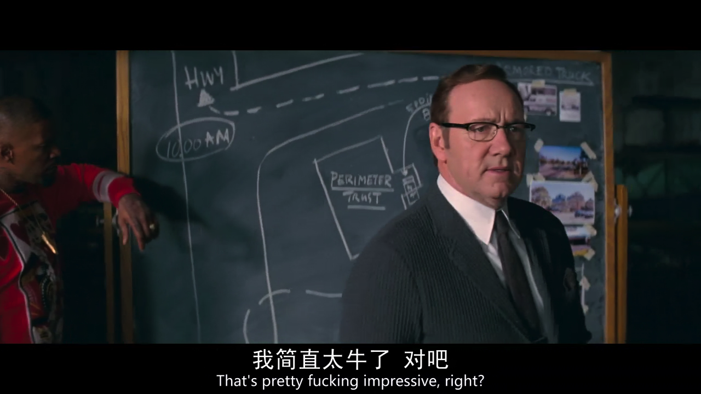
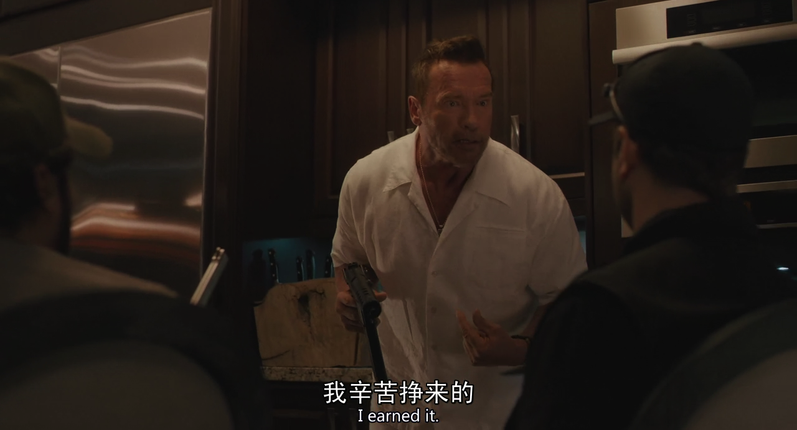
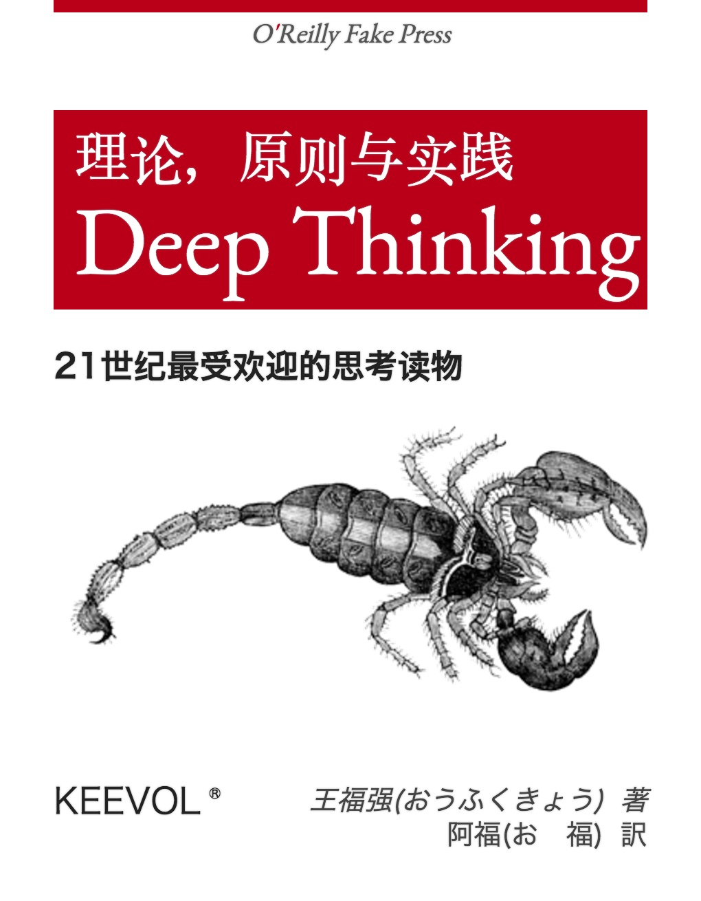

你的迷茫我解答不了
王福强 - fujohnwang AT gmail DOTA com
今天挖财一名小美女让我帮忙解惑，做回人生导师，可是，负责任的说，臣妾可能做不到啊， 人生之路，小马过河，谁的经验对你可能都无法100%匹配借鉴，你只能自己走过去试试才知道…
没有特长就没有竞争优势？ 未必！
小美女说，她一直理解或者认同的道理是，没有特长就没有竞争优势。其实这个未必！
如果将谋生划分一下阶段的话， 有一个阶段你可能是要通过出卖体力或者脑力或者both来谋生的，也就是我们所说的专业性， 在这个阶段里，上面这个道理是合理的。
但当你进入下一个阶段，比如靠资本谋生或者靠组织和经营谋生的时候，特长或者个人优势所代表的专业性所起的作用就没有那么重要了，甚至还可能成为阻碍。
如果你能理解上面马云说的这番话，那么，你应该可以理解我在说什么。

或者这幅插图里的Kevin Spacey所饰演的角色，他不是靠专业性谋生的，边上那个哥们则是。
职业生涯规划得来吗？
那么，职业生涯可以规划的来吗？ 职业生涯规划这个词儿前几年挺火的，对于这个问题，我也不好说，因为我没有这方面的经验。但个人觉得，可以有，但不一定能长期有效。
前阵子跟一位老先生聊过他的一个想法，跟职业生涯规划的场景有些像，但我不觉得这个东西可以规模化，所以，也就没有想进一步沟通。如果你看一下这个人的面相，就能知道这个人的命运，那么这个世界就太简单了，用面部识别程序直接扫描每个人的照片就把这个世界安排妥当了，而我不认为世界是这么运转的。
你看到这个人的面相，可以说出一些东西，是因为你看到的是到目前为止，这个人的经历和精神状态，虽然这些对这个人后面生命经历有些延长作用，但人生无常，不一定什么因素就打破了这条延长线，未来是无法预知的， 看未来远没有看过去清晰！
拥抱变化， 不忘初心
工作两年就能够深刻了解自身的优势可能言之过早了，任何事情都是需要沉淀的，虽然投机也有成的，但我自己宁愿相信正心跬步，慢慢积累，Changes take time

施瓦辛格老先生演的这个片儿很烂，这张插图是我唯一留下来有价值的东西，话有双关，看官自己揣摩吧~
彩蛋
扶墙老师下一部著作《The Way Of Deep Thinking》预告，敬请关注 ；）

「为AI疯狂」星球上，扶墙老师正在和朋友们讨论有趣的AI话题，你要不要⼀起来呀？^-^
这里
- 不但有及时新鲜的AI资讯和深度探讨
- 还分享AI工具、产品方法和商业机会
- 更有体系化精品付费内容等着你，加入星球(https://t.zsxq.com/0dI3ZA0sL) 即可免费领取。(加入之后一定记得看置顶消息呀！)

存量的时代，省钱就是赚钱。
在增量的时代，省钱其实是亏钱。
避坑儿是省钱的一种形式，更是真正聪明人的选择！
弯路虽然也是路，但还是能少走就少走，背后都是高昂的试错成本。
订阅「福报」，少踩坑，少走弯路，多走一步，就是不一样的胜率！